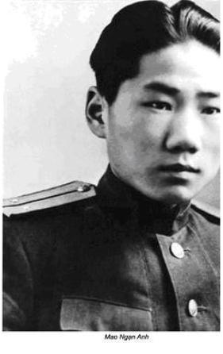
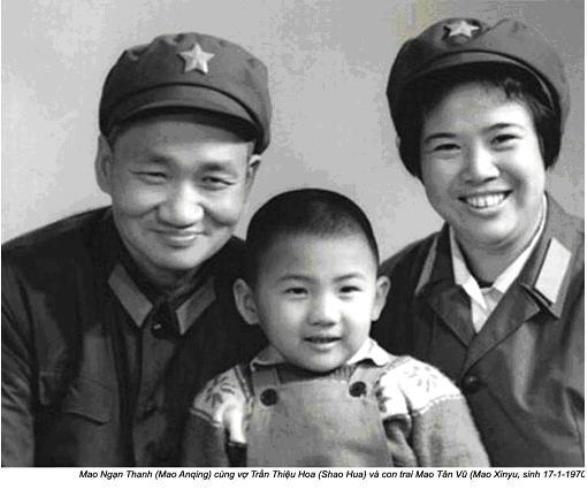

Chương 4

ột quan chức bị ốm và chết do viêm não Nhật Bản, tôi cấp tốc được triệu về Trung Nam Hải. Dịch viêm não Nhật Bản truyền qua muỗi đốt, muỗi lại rất nhiều ở Bắc Kinh đặc biệt vào mùa hè và mùa thu. Vì thế trường hợp sốt do viêm não ở đây không phải hiếm. Các nhà chuyên môn thời kỳ đó khuyên nên theo dõi hội chứng căn bệnh nguy hiểm này, nó phá huỷ não. Giai đoạn đầu của bệnh có thể bị ngăn chặn bằng thuốc đông y cổ truyền, triệu chứng giống như cúm. Tuy nhiên nếu điều trị không kịp thời, bệnh tiến triển nhanh người bệnh rối loạn hệ thần kinh, cái chết khó tránh được.
Mùa hè 1950 có mưa nhiều, Bắc Kinh ẩm ướt, muỗi nhiều như trấu. Một nhân viên ở Trung Nam Hải bị sốt do viêm não Nhật Bản, bác sĩ trẻ ít kinh nghiệm chẩn đoán cúm. Do điều trị không đúng, bệnh nhân tử vong. Người nhân viên này sống gần biệt thự của Mao chủ tịch, vì thế Dương Thượng Côn và Chu Ân Lai lo lắng sự nguy hiểm bệnh dịch đe doạ lãnh tụ.
Bác sĩ giám đốc trẻ tuổi ở bệnh viện Trung Nam Hải bị thải hồi tức khắc. Bệnh viện được cải tổ, trong thành phố người ta tổ chức diệt muỗi quyết liệt. Lãnh đạo quyết định chuyển bộ phận y tế ở Đồi Hương vào Trung Nam Hải, đây là một phần trong kế hoạch tái tổ chức bệnh viện. Quyết định này thực tế làm thay đổi tận gốc cuộc đời tôi.
Bệnh viện ở Trung Nam Hải vốn trang bị tồi tàn nay được cấp tốc nâng cấp, hiện đại hoá để trở thành trung tâm chữa bệnh cho các lãnh tụ đảng và nhà nước. Đồng thời người ta cũng cải tạo lại các ngôi nhà ở Trung Nam Hải. Tại đó có hai hồ lớn chiếm một diện tích rộng: hồ Trung và hồ Nam, phong cảnh tuyệt vời, xung quanh bao bọc bức tường màu đỏ son sát Cấm Thành. Khu này rất bí mật vì thế bức tường ngăn người lạ nhìn vào. Sau khi các nhà lãnh đạo cộng sản đến đây ở, các sách viết về Cấm thành, kèm theo bản đồ biến mất trong quán sách. Bộ đội vũ trang thuộc trung đoàn Cận vệ canh gác khắp nơi và cổng ra vào, ngay cán bộ nhân viên trong khu vực cũng bị kiểm soát nghiêm ngặt. Ra vào Trung Nam Hải chỉ cho phép những ai làm việc và sống ở đấy, hoặc khách mời chính thức của nhà nước. Trụ sở Quốc vụ viện Cộng hoà nhân dân Trung Hoa, do Chu Ân Lai lãnh đạo nằm ở phía bắc, cạnh hồ Trung. Cùng sống và làm việc với Mao còn có những người bạn chiến đấu của ông – Chu Đức, Lưu Thiếu Kỳ, Chu Ân Lai, Bành Đức Hoài, Đặng Tiểu Bình, Lý Tiên Niệm, Đổng Bích Vũ, Lý Phú Xuân và Trần Nghị. Họ là quan chức cao cấp nhất của đảng, tư dinh của họ là những biệt thự trong cung điện Cấm Thành. Tất cả cán bộ, công nhân viên chức làm việc cũng được sống ở đây. Tôi được chia một căn nhà nhỏ trong khu, sau tôi chuyển sang căn nhà lớn hơn, đưa Lý Liên và thằng con trai John mới chập chững về sống cùng.
Thậm chí ngay trên vùng đất được bảo vệ cẩn mật thế này mà lực lượng an ninh vẫn luôn luôn cảnh giác cao độ. Đi từ khu này sang khu kia đều qua sự kiểm soát rất nghiêm ngặt. Đi đến đâu cũng bị hỏi thẻ ra vào. Tôi làm việc ở bệnh viện cách tư dinh Mao không xa. Tuy tôi có thẻ ra vào “B”, nhưng tôi chỉ có thể đi quanh khu bệnh viện, về nhà, loanh quanh sân nhà minh mà thôi. Lý Liên cũng có thẻ B, nhưng không được đi lại nhiều như tôi.
Là giám đốc Bệnh viện Trung Nam Hải chịu trách nhiệm điều trị không những cán bộ cao cấp sống trong Trung Nam Hải, còn cả các gia đình, những nhân vật quan trọng sống ở Bắc Kinh. Nhiều chiến sĩ cách mạng tám năm chiến đấu với Nhật và bốn năm với quân đội Quốc dân đảng, giờ đây họ mới lập gia đình, vì thế tôi còn phải chữa bệnh cho đám con nhỏ của họ. Gánh nặng công việc đè nặng lên vai, tôi không còn thời gian nghỉ ngơi nữa.
Tôi viết đơn xin vào đảng, nhưng nguồn gốc xuất thân của tôi lại thành trở ngại. Lý lịch của tôi thuộc thành phần bất hảo đối với tiêu chí của đảng cộng sản đề ra. Bố tôi từng giữ chức vụ quan trọng trong chính phủ Quốc dân đảng. Dù Chu Ân Lai mời ông trở về Bắc Kinh, hứa sẽ bảo vệ ông, nhưng người ta vẫn coi bố tôi thuộc diện “phản động”. Bố vợ tôi, đại điền chủ tỉnh An Huy trong khi đó cuộc cải cách ruộng đất vẫn tiến hành, ông bị quy tội “kẻ thù nhân dân”, bị tước không chỉ quyền công dân, còn tịch thu tất cả tài sản. Bây giờ cuộc sống của ông phụ thuộc vào sự chu cấp của tôi. Họ nghi ngờ cả vợ tôi. Trước giải phóng, vợ tôi làm việc cho không lực Hoa Kỳ và toà lãnh sự Anh, người ta đồn rằng vợ tôi là điệp viên bí mật của cả hai đế quốc tư bản.
Những hoạt động thời thanh niên của tôi cũng bị nghi ngờ. Trong bản khai lý lịch, kèm đơn xin vào đảng tôi có khai, sau khi học xong lớp 10 trung học ở Quý Châu, tôi bị Quốc dân đảng gọi đi huấn luyện quân sự ba tháng. Người ta nói, sau lớp huấn luyện tôi sẽ gia nhập Hội Phục hưng Quốc gia của Quốc dân đảng. Tuy nhiên, khi mãn khoá huấn luyện, tôi chẳng bao giờ nghe đến cái tổ chức này, cũng không quan hệ bất cứ hoạt động nào của nó kể cả gián tiếp. Sau mới hay, Hội Phục hưng Quốc gia là tiền thân Tam Đầu Chế của Đoàn thanh niên nhân dân, một tổ chức chính trị có liên quan tới Hội Áo bồ câu – một trong số tổ chức đặc nhiệm của Quốc dân đảng. Các đảng viên cộng sản có nhiệm vụ điều tra lý lịch tôi, không tin tôi không dính líu vào hoạt động của Hội Phục hưng.
Lại phát sinh thêm sự nghi ngờ mối quan hệ trong thời kỳ tập sự sau khi tôi tốt nghiệp y khoa. Đợt thực hành y khoa đầu tiên của tôi bắt đầu với tư cách bác sĩ quân y của Quốc dân đảng.
Quan chức của đảng tiếp tục đào bới quá khứ, dĩ nhiên họ tin tôi đã hoạt động trong Hội Phục Hưng, tôi chính là tên gián điệp. Việc kết nạp tôi vào đảng bị hoãn vô thời hạn.
Thật vô lý, tôi chỉ muốn đóng góp sức lực vào sự nghiệp cách mạng. Để làm điều này, tôi tình nguyện tham gia đội cải cách ruộng đất trực tiếp xuống nông thôn, lấy đất đai và tài sản tịch thu của bọn đại điền chủ chia cho bần cố nông. Thậm chí cuộc cải cách ruộng đất đã tước đi tất cả mọi thứ của nhạc phụ, nhưng tôi vẫn ủng hộ cách mạng. Cải cách ruộng đất kết thúc sự bóc lột hàng trăm năm đối với nông dân, cải thiện đáng kể đời sống nghèo khó ở thôn quê. Chỉ sau vài năm, một số người bạn kể lại, tôi mới biết thực chất cuộc cải cách man rợ, mất hết nhân tính mà những “ông đội, bà đội” tham gia lúc đó gây ra. It lâu sau người ta không cho tôi tham gia cải cách ruộng đất, lý do Trung Nam Hải rất cần nghề bác sĩ của tôi.
Hè năm 1950 chiến tranh Triều Tiên bùng nổ. Tôi lập tức làm đơn tình nguyện ra mặt trận. Tôi chưa được tham gia kháng Nhật và nội chiến Quốc-Cộng, vì thế tôi quyết định, giờ đây là cơ hội phục vụ tổ quốc. Tuy vậy, tôi tin Trung Quốc khó thắng nổi cuộc chiến này, vì Hoa Kỳ hiện đại về mọi mặt, hơn hẳn Trung Quốc, một nước hùng mạnh bậc nhất thế giới.
Tôi theo dõi chặt chẽ tin chiến sự, thật ngạc nhiên, vui mừng thấy quân đội Trung Quốc không bị đẩy lùi, còn giáng cho kẻ địch những đòn sấm sét hết mặt trận này sang mặt trận khác. Lần đầu tiên sau một thế kỷ, Trung Quốc tỏ rõ sức mạnh đủ khả năng chống lại lực lượng xâm lược ngoại quốc hùng mạnh. Tôi kinh hoàng khi biết Hoa Kỳ đã sử dụng vũ khí vi trùng ở Triều Tiên. Dù rằng cuộc chiến ở Triều Tiên vẫn tiếp diễn chưa có dấu hiệu kết thúc, tôi vẫn tự hào vô hạn là người Trung Hoa, nhưng cấp trên không cho tôi tham gia chiến sự, họ bảo công việc tôi ở Trung Nam Hải còn quan trọng và cần thiết hơn ra chiến trường.
Tôi buồn, chán nản vì họ không cho phép tôi đóng góp cho cách mạng, càng thất vọng vì không có cơ hội thành bác sĩ phẫu thuật. Tôi cảm thấy cô đơn, bị người cách mạng xa lánh, tuy họ là bệnh nhân của tôi, càng buồn hơn khi việc vào đảng vẫn giậm chân tại chỗ.
Đang trong lúc buồn nản, mùa xuân 1952 lần đầu tiên tôi gặp gia đình Mao chủ tịch. Mao Ngạn Thanh, người con trai 30 tuổi của lãnh tụ được đưa vào bệnh viện. Anh ta mắc bệnh tâm thần, thướng xuyên mất ngủ, suốt đêm đi lại quanh nhà, lẩm bẩm một mình. Mao có hai con trai – Mao Ngạn Anh và Mao Ngạn Thanh. Hai người này là con của bà Đường Khai Tuệ, người vợ đầu tiên do ông lựa chọn, bị Quốc dân đảng xử tử năm 1930 vì không chịu bỏ người chồng mình, mặc dù lúc đó Mao sống cách đấy vài trăm dặm ở Giang Tây, vùng căn cứ địa xô viết và cũng đã lấy bà Hạ Tử Trân. Sau khi mẹ chết, hai người con nhỏ được chuyển về Thượng Hải, ở đó sống như kẻ du thủ du thực, kiếm ăn từng bữa qua ngày. Những ai từng biết Mao Ngạn Thanh đều cho rằng bệnh tâm thần do bị đòn dã man của cảnh sát Thượng Hải. Họ mới tìm thấy hai người con trai Mao cách đây vài năm. Khi Diên An trở thành căn cứ địa của đảng. Mao đã gửi con sang Liên Xô du học.


Khi bắt đầu chiến tranh Triều Tiên, người con lớn, Mao Ngạn Anh, ra chiến trường, hy sinh trong cuộc ném bom của Mỹ. Người con út Mao Ngạn Thanh làm phiên dịch ở Ban Tuyên huấn trực thuộc Ban chấp hành trung ương đảng cộng sản Trung Quốc.
Năm 1953 trong khi cả nước rầm rộ chiến dịch “Ba Chống”, chống tham nhũng, chống lãng phí và chống tệ quan liêu trong hàng ngũ cán bộ viên đảng cộng sản. Mao Ngạn Thanh phát hiện một đồng sự đã biển thủ tiền nhuận bút bài báo của anh bằng cách giả mạo chữ ký. Mao Ngạn Thanh điên tiết đánh người đồng sự. Biết tin, Mao nổi giận, quở trách người con thậm tệ. Có thể, đây là một trong những nguyên nhân gây nên bệnh tâm thần của Mao Ngạn Thanh. Tôi không phải chuyên gia trong lĩnh vực tâm-thần kinh, hơn nữa cơ sở chúng tôi chỉ điều trị tạm thời. Tôi cho Mao Ngạn Thanh uống thuốc an thần, chờ thời cơ thuận tiện báo cho gia đình, chuyển sang bệnh viện tâm thần điều trị lâu dài.
Một chiều, khi tôi đang kiểm tra bệnh án, cô y tá chạy hớt hơ hớt hải tới báo tin Giang Thanh đang có mặt trong bệnh viện và muốn nói chuyện với tôi về sức khoẻ của Ngạn Thanh.
Giang Thanh đi cùng người nữ y tá trang phục chỉnh tề, chờ tôi trong phòng khách, cạnh buồng Ngạn Thanh. Tôi thấy vợ Mao một vài lần, nhưng chỉ thoáng qua. Bà ta vào đảng ở Diên An, trước đó là diễn viên ở Thượng Hải. Tất nhiên, tôi cho rằng quần áo của bà khác hẳn bộ đồ một màu xám của lãnh tụ, kiểu quần áo cho tất cả mọi người thời đó. Nhưng điều tôi nhìn thấy lại rất gây ấn tượng. Giang Thanh mặc bộ âu phục dạ thanh lịch. Dưới áo gi-lê là chiếc váy bằng nhung lụa mềm mại. Chân bà đi tất mỏng – thời ấy được xem là xa xỉ – đôi giầy da màu đen gót thấp. Mái tóc đen dày, uốn từng nếp cuộn tròn chải chuốt. Bà có đôi mắt to tròn, đen xẫm quyến rũ, nước da trắng màu ngà voi. Giang Thanh cao khoảng mét sáu mươi, mảnh mai, phần lưng dài hơn phần dưới. Hồi ấy bà 38 tuổi, tôi 32.
- Chắc đồng chí là bác sĩ Lý?
Giang Thanh chào hỏi tôi rất lịch sự, giọng Bắc Kinh, khi tôi ngồi đối diện. Không chờ tôi trả lời, Giang Thanh hỏi luôn:
- Sức khỏe Ngạn Thanh thế nào?
Mặc dù giọng nói rất thanh lịch nhưng rất lạnh lùng. Người ta kể rằng thời trẻ Giang Thanh là cô gái đẹp, duyên dáng. Theo tôi Giang Thanh, một phụ nữ đáng yêu nhưng không đẹp. Bà ta có vẻ vừa đoan trang, vừa ngạo mạn.
Tôi báo cáo tỷ mỉ tình trạng sức khoẻ của Ngạn Thanh và khuyên nên chuyển anh ta đến bệnh viện tâm thần hoặc trại an dưỡng, bởi vì bệnh viện chúng tôi không đủ phương tiện chữa bệnh tâm thần.
Giang Thanh nghĩ một lúc, cuối cùng bảo:
- Tôi sẽ nói lại điều này với Chủ tịch, để chủ tịch quyết định.
Khi chia tay chúng tôi bắt tay nhau. Ngón tay bà nhỏ nhắn, mềm mại, móng tay được thợ sửa cầu kỳ. Cám ơn tôi xong, bà đi ra sân, có ba vệ sĩ đứng chờ. Bà ta dường như không tin tôi, đôi mắt nhìn soi mói, ngữ điệu dò hỏi đã toát lên vẻ nghi ngờ của bà đối với những lời chân thật của tôi.
Sau một thời gian ngắn, bác sĩ tâm thần xác nhận Mao Ngạn Thanh bị điên, chuyển anh về thị xã sát bờ biển thuộc tỉnh Đại Liên, đông bắc Trung Quốc điều trị. Anh ta sống trong một căn nhà riêng và có cô y tá phục vụ. Hai người yêu nhau, nhưng gia đình Mao lại chọn cho anh ta một cô vợ khác, em gái út vợ goá Mao Ngạn Anh. Cô y tá đau khổ đã phải trở về Bắc Kinh.
Mùa thu năm 1953, một năm sau cuộc gặp ở bệnh viện, tôi lại chạm trán với Giang Thanh, nhưng ở nhà Hồ Kiều Mục, một trong các thư ký của Mao, trưởng Ban Tuyên huấn. Hồ Kiều Mục vị nể công việc y khoa của tôi, chúng tôi trở thành bạn của nhau.
Tôi đến nhà Hồ Kiều Mục trong khu Trung Nam Hải để chữa cho ông chứng dị ứng và bệnh loét dạ dày. Lúc đang khám, bỗng nhiên vợ ông, Hồ Hữu, làm việc ở Viện hàn lâm khoa học, chạy vào thông báo Giang Thanh đang tới. Bà giục chồng:
- Mặc quần áo nhanh lên.
Ông xin lỗi tôi vì phải bỏ dở cuộc khám.
Tôi chạm trán Giang Thanh ngay lối vào.
- Có phải bác sĩ Lý không?
Vừa hỏi vừa bắt tay tôi trong khi Hồ Kiều Mục giải thích lý do cuộc viếng thăm của tôi. Tuy đã lâu rồi nhưng tôi không quên được giọng lạnh lùng khi bà nói chuyện với tôi lần thứ hai này.
Phụ trách bệnh viện Trung Nam Hải, tôi coi tất cả bệnh nhân như nhau, không phân biệt địa vị, chức vụ của họ. Danh tiếng của tôi tăng lên từng ngày. Nhiều người đã hài lòng khi tôi chữa bệnh cho họ, một số người thậm chí tin tôi, kể cho tôi nghe đời tư, chuyện gia đình để tìm lời khuyên trong tình huống phức tạp. Họ tin tưởng vì tôi chưa khi nào làm lộ bí mật những điều tâm sự.
Cuối năm 1952 tôi được cấp chứng minh thư “A” dành cho nhân viên gương mẫu của Văn phòng Trung ương. Đó là một vinh hạnh lớn.
Cuối cùng người ta kết nạp tôi vào đảng viên dự bị đảng cộng sản. Toàn đảng bộ nhất trí, không ai phản đối tôi cả. Trong quá trình thẩm tra lý lịch, họ phát hiện một người cùng quê, Tô Biên, lãnh đạo trong thời kỳ tôi tham gia lớp huấn luyện năm 1936, đang lao động khổ sai trong trại cải tạo ở Quý Châu, nhưng anh ta không nhớ gì về tôi. Họ lại đi tìm những bạn học cùng trường, cùng lớp cũ, nhưng tất cả đều nhất trí xác nhận tôi chẳng hứng thú tham gia chuyện chính trị. Việc thẩm tra lý lịch vào đảng của tôi kéo dài tròn hai năm.
Thành phần xuất thân của tôi và những hoạt động không thích chính trị đã gây nhiều bất lợi cho tôi khi đất nước Trung Hoa tiến hành làn sóng thanh lọc mới, nhưng tháng 11-1952, đứng dưới lá cờ đảng tôi đã thề trung thành, cống hiến trọn đời, sẵn sàng hy sinh cho đảng cộng sản Trung Quốc. Về chủ nghĩa Mác, tôi chỉ đọc qua “Tuyên ngôn đảng cộng sản” của Marx, hai bài chính luận của Mao. Ngoài ra, tôi chỉ nhớ một vài lần anh tôi giảng giải, một số khẩu hiệu Mác-xít, đại loại như “Làm theo năng lực, hưởng theo nhu cầu”.
Thật ra, tôi chưa bao giờ trở thành người đảng viên như họ. Phần đông đảng viên làm việc ở Trung Nam Hải thuộc hạng đặc quyền đặc lợi. Họ tham gia cách mạng đã lâu, vào đảng khi còn trẻ, thường ở lứa tuổi đôi mươi, tham gia cuộc Vạn Lý Trường Chinh. Hầu hết xuất thân từ dân nghèo, ít học vẫn mang nặng thành kiến thủ cựu của nông dân. Nhiều người trong số họ ngưỡng mộ sự hiểu biết của tôi. Còn tôi đánh giá cao sự nhiệt tình cách mạng, sự sẵn sàng hy sinh cho lý tưởng cách mạng của họ. Nhưng giữa chúng tôi vẫn có hố ngăn cách quá lớn. Họ coi tôi là trí thức, một bác sĩ, thuộc về tầng lóp bóc lột, đáng ngờ, tôi trở thành mục tiêu để “lôi kéo, sử dụng và cải tạo”. Giá trị duy nhất của tôi đối với đảng là kinh nghiệm tay nghề của một bác sĩ y khoa.
Sự đánh giá khả năng tay nghề của tôi sau khi Uông Đông Hưng gọi điện mời tôi đến nhà ông vào buổi tối ngày 2 tháng 10 năm 1954 tôi mới biết.
Uông phụ trách Ban bảo vệ trung ương, lo toan an ninh cho giới lãnh đạo, đồng thời ông còn chỉ huy đội vệ sĩ của Mao chủ tịch. Tôi quen ông trong bệnh viện, khi vợ ông và con nhỏ vài lần tới khám chữa bệnh, lần nào cũng hỏi tôi cặn kẽ về bệnh tình vợ con ông. Chúng tôi thành bạn với nhau. Uông là công thần của đảng, sống sót sau cuộc Vạn Lý Trường Chinh. Ngay từ nhỏ, mới 10 tuổi đã theo cách mạng, ông là con nông dân nghèo ngoại ô, không được học hành, lang thang đường phố, một lần bị cảnh sát bắt vì tội đái bậy trên đường phố, may nhờ khoản tiền hối lộ khổng lồ của bố, ông mới thoát cảnh tù tội. Căm ghét chế độ tham nhũng của Quốc Dân đảng, ông theo đảng cộng sản, gặp Mao, tham gia hoạt động với Mao từ hồi ở Hồ Nam. Sau năm 1949, bất ngờ ông được tiến cử vào hàng ngũ lãnh đạo cao cấp uy tín, nhưng ông luôn luôn tôn trọng tầng lớp trí thức, nhất là tôi, một bác sĩ được đào tạo ở Tây phương.
Trên điện thoại, ông không cho biết lý do, chỉ nói có chuyện gấp cần trao đổi riêng. Điều này làm tôi bối rối, bởi vì giữa tôi và Uông Đông Hưng luôn cởi mở với nhau.
Tôi gặp ông trong một phòng rộng lớn ở Trung Nam Hải, ông sống với vợ ở đó. Căn buồng vừa là phòng làm việc, phòng khách, phòng ăn thậm chí còn là phòng ngủ. Con cái ông và người trông trẻ sống trong khu nhà đối diện bên kia chiếc sân rộng. Uông Đông Hưng rót trà, đưa một chén cho tôi, nói:
- Đây là trà Long Thanh mới hái năm nay đấy. Thử đi đồng chí! Trà này trồng ở Hàng Châu, ngon nhất Trung Quốc. Rượu vang chất lượng phụ thuộc vào độ tuổi, còn trà ngon và đắt nhất lại là trà vừa thu hoạch trong năm.
Uông Đông Hưng đúng là dân sành điệu uống trà. Tôi nhấp một ngụm, thấy rất thơm ngon. Cuối cùng tôi phải hỏi vì sao Uông mời tôi đến.
- Tôi có thể giúp gì đồng chí?
Uông Đông Hưng giọng trở lên quan trọng, hỏi tôi:
- Đồng chí biết vì sao trong thời gian dài tôi không điều đồng chí đi chỗ khác?
Tôi bối rối về câu hỏi của ông ta, đáp:
- Tôi không biết.
- Tôi theo dõi đồng chí vài năm nay, mọi người ở Trung Nam Hải quý trọng đồng chí. Đồng chí được bệnh nhân đánh giá cao vì không phân biệt địa vị, chức vụ và không khi nào tỏ vẻ ngạo mạn. Kinh nghiệm, kiến thức y học, tinh thần, thái độ phục vụ trong công việc của đồng chí đã làm chúng tôi kính phục, kể cả lãnh đạo cao cấp. Thậm chí chính Mao chủ tịch đã nghe thấy lời ca ngợi về đồng chí. Lâu nay chúng tôi chọn tìm một bác sĩ riêng Mao chủ tịch, nhưng chuyện này thật không đơn giản.
Uông nói tiếp:
- Tôi đã thảo luận với Bộ trưởng công an La Thuỵ Khanh và Dương Thượng Côn trưởng ban Ban tổ chức, xếp đồng chí vào công việc này. Tôi cũng thông báo cho thủ tướng Chu Ân Lai, mọi người đều thống nhất chấp thuận sự lựa chọn của tôi. Hôm qua, tôi đã đệ trình lên Mao chủ tịch, sơ bộ chủ tịch đã đồng ý, nhưng trước khi có quyết định chính thức, chủ tịch muốn nói chuyện trực tiếp với đồng chí. Đồng chí cần chuẩn bị chu đáo. Tôi nghĩ rằng Chủ tịch sẽ nhanh chóng gọi đồng chí đến gặp đấy.
Tôi rất bất ngờ tin này. Tôi biết sau cái chết bất ngờ của Nhậm Bích Thế năm 1950, tất cả các nhà lãnh đạo bắt đầu sử dụng bác sĩ riêng, nhưng tôi chưa bao giờ nghĩ rằng mình sẽ trở thành bác sĩ riêng. Từ bệnh viện tôi thường nhìn sang khu nhà Mao ở. Tôi cho rằng ngôi nhà này là trái tim của Trung Quốc, nhịp đập Mao, cũng là nhịp đập của người dân Trung Hoa. Thậm chí không dám hình dung một ngày nào đó tôi được đặt chân đến nơi ấy. Mao đối với tôi là người vĩ đại, xa xăm như ngôi sao trên trời. Đầu óc tôi đột nhiên ngổn ngang bao ý nghĩ. “Công việc này không thể dành cho mình”. Tôi hoàn toàn không xứng đáng đảm nhận công việc đó. Thành phần xuất thân của tôi thế nào đây? Tôi đã từng bị nghi ngờ có liên quan với Quốc dân đảng, bố tôi đã làm cho chính phủ Quốc dân đảng. Còn vợ tôi? Người ta từng đồn thổi là gián điệp. Lý Liên chưa là đảng viên và chẳng khi nào có thể vào đảng được. Không, công việc như thế thường trao cho con cái công nhân và nông dân. Quá khứ của tôi luôn luôn bám sát tôi, không thể thay đổi được”. Ngoài ra, Mao cũng đã có bác sĩ riêng.
Tôi nhớ lại trường hợp đau buồn trong quá khứ của cụ tôi, từng là thầy thuốc trong hoàng cung Từ Hy Thái Hậu, sau khi phát hiện bệnh giang mai ở con trai bà – hoàng đế Đồng Trị. Họ tước phẩm hàm cụ tôi khỏi chức vụ ngự y thái sử, đã ảnh hưởng tới thế hệ sau, không ai trong họ chúng tôi có quyền chữa bệnh trong hoàng cung.
Tôi từ chối, không xứng đáng làm công việc này, nhưng Uông cười phá lên, bảo:
- Đừng lo! Trước khi cho đồng chí vào đảng, chúng tôi điều tra cẩn thận quá khứ và những người thân của đồng chí. Mọi nghi vấn đã được tháo gỡ. La Thuỵ Khanh, Dương Thượng Côn và thủ tướng Chu Ân Lai không nghi ngờ lòng trung thành và an tâm về quá khứ của đồng chí. Nếu không thế làm sao đồng chí được tiến cử làm bác sĩ riêng cho Mao chủ tịch. Quá khứ cụ tổ đồng chí, thuộc về thời phong kiến. Thời nay khác xưa rồi, đồng chí nên xoá bỏ tất cả những mặc cảm đó đi.
Tôi hỏi:
- Nhưng đồng chí Phó Liêm Chương có biết việc này không chứ?
Chính Phó Liêm Chương kêu gọi tôi hồi hương, bố trí công việc cho tôi, giờ đây là thứ trưởng Bộ y tế, trực thuộc Quốc vụ viện Cộng hoà nhân dân Trung Hoa. Trước đây đồng chí ấy lãnh đạo Cục bảo vệ sức khoẻ, lo về công tác bảo vệ sức khoẻ các lãnh tụ cao cấp đất nước. Phó Liêm Chương tự cho mình là bạn thân, là chiến hữu của Mao chủ tịch, đương nhiên, luôn luôn phải quan tâm sức khoẻ của Mao chủ tịch nhiều hơn. Vì thế tôi cho rằng giao việc cho tôi nên thảo luận cả với Phó.
Uông đáp:
- Các đồng chí lãnh đạo cao nhất sẽ quyết định. Dù rằng đồng chí Phó Liêm Chương là thủ trưởng trực tiếp của đồng chí, tôi không nghĩ chúng tôi nhất thiết phải hỏi đồng chí ấy.
Nhưng tôi linh cảm điều này có gì không ổn nếu như Phó Liêm Chương không được hỏi ý kiến.
Tôi nói với Uông:
- Tôi cũng cần có thời gian suy nghĩ đề nghị của đồng chí.
Lý do chưa thuyết phục tôi. Tôi không cảm thấy mình vẫn đang ở bên ngoài Trung Nam Hải, dù rằng về hình thức tôi đã đứng trong hàng ngũ đảng. Thành phần xuất thân của tôi không khi nào xoá được. Nếu tôi thành bác sĩ riêng của Mao chủ tịch, tôi sẽ luôn luôn nằm dưới sự theo dõi chặt chẽ. Chỉ cần phạm lỗi nhỏ người ta sẽ ghi vào lý lịch, có thể đổ tội về thành phần gia đình. Bất cứ sai phạm nào người ta có thể buộc tội tôi âm mưu chống đảng. Tôi sẽ tức khắc bị coi là kẻ thù giai cấp, trở thành kẻ tội đồ khủng khiếp.
Uông nói:
- Không còn thời gian để đồng chí nghĩ lung tung nữa. Chúng tôi đã quyết định rồi.
Lúc này tôi hiểu rằng mình hết lựa chọn. Tôi nói với ông:
- Nếu tôi đảm nhận trách nhiệm này, tất nhiên tôi sẽ làm hết sức mình. Nhưng nói trước, tôi chưa đạt được trình độ hoàn thiện, nếu mắc lỗi xin cứ kỷ luật tôi chứ đừng đổ xuống đầu đồng chí.
Thực tế, Uông Đông Hưng rất liều khi đề bạt tôi vào nhiệm vụ này. Nếu tôi mắc lỗi gì đó, Uông cũng phải gánh chịu. Chúng tôi đã buộc chung dây với nhau, thả trong cùng một rọ cho đến khi Mao chủ tịch qua đời.
Uông động viên tôi:
- Đừng lo. Dĩ nhiên, đồng chí phải hết sức chú ý và thận trọng, phải thường xuyên trao đổi với thủ trưởng, nhưng đồng chí cũng phải tự quyết định nếu thấy việc làm ấy là đúng. Đồng chí sẽ phải chịu hoàn toàn trách nhiệm công việc mình làm. Tất cả chỉ có thế. Tôi nghĩ, đồng chí sẽ thành công, hoàn thành xuất sắc nhiệm vụ được giao, hy vọng tôi không sai lầm khi chọn đồng chí. Bây giờ, đồng chí về, chuẩn bị cho cuộc nói chuyện với Mao chủ tịch. Chủ tịch là người quyết định cuối cùng. Khi nào chủ tịch gọi, tôi sẽ điện thoại để đồng chí rõ.
Uông Đông Hưng đưa tôi hồ sơ sức khoẻ Mao, yêu cầu tôi xem trước. Uông cũng nói rằng Mao sớm rời khỏi Bắc Kinh đi nghỉ ở phương nam. Tôi vẫn tiếp tục làm việc ở bệnh viện, chờ quyết định cuối cùng.
Trong khi chờ đợi, tôi nghe không ít những lời cảnh cáo. Trần Dương Anh, vợ goá Nhậm Bích Thế, một trong 5 bí thư hàng đầu của đảng cộng sản, nhắc tôi công việc sắp tới sẽ chẳng đơn giản chút nào đâu. Sau khi chồng chết 1950, bà sống trong sự thất vọng. Tôi cố an ủi và động viên bà. Bà là người phụ nữ khả kính, một người vợ chung thuỷ, một người mẹ đáng kính. Sau cuộc gặp này chúng tôi trở thành bạn tốt của nhau.
Cùng với Trần Dương Anh, tôi có mặt trong các cuộc hội nghị đảng, đi Thượng Hải và Hàng Châu. Bà kể cho tôi về sự lập dị và quái đản của Mao cảnh báo tôi rằng phải thận trọng khi nói chuyện với Mao chủ tịch. Bà bảo:
- Mao có thói nổi xung bất thường, chỉ một sai sót nhỏ có thể làm ông phát khùng. Vợ ông, Giang Thanh, một người độc ác, thô bạo với người xung quanh, ngoài ra còn có tật quyến rũ đàn ông. Đừng bị mê hoặc bởi vẻ ngoài của bà ta. Nếu không, đồng chí rơi vào thảm hoạ, không một ai trong số những người gần Mao giúp được đồng chí đâu. Hơn thế nữa, bất kỳ lúc nào đồng chí cũng có thể chui đầu vào tù đấy.
Những lời cảnh báo của Trần Dương Anh làm tôi giật mình. Tôi tôn thờ Mao, cho rằng chủ tịch không bao giờ làm điều sai quấy. Dĩ nhiên, ông không phải là vua, nhưng ông uy quyền tuyệt đối, điều không cần phải bàn cãi. Không ai có đủ dũng cảm phê bình ông. Thêm nữa, chính trong những năm này rộ lên chiến dịch đấu tranh chống bọn phản cách mạng, nếu ai đó nghe được lời cảnh báo của Trần Dương Anh, người ta có thể buộc tội bà âm mưu tạo phản, phần tử phản cách mạng.
Tôi không bao giờ quên những lời cảnh báo của bà, đã bao nhiêu năm nhưng lời của bà vẫn ám ảnh tôi. Thậm chí bây giờ tôi vẫn còn biết ơn sâu sắc người phụ nữ khả kính này, vì lòng chân thành, thiện chí, cởi mở.
Cuộc đấu tranh với phản cách mạng ở Trung Nam Hải làm tôi lo sợ thật sự. Cầm đầu chiến dịch chính là Uông Đông Hưng, giám đốc Ban bảo vệ nôi bộ, người tiến cử tôi làm bác sĩ riêng cho Mao. Người ta thường quy tội những bác sĩ riêng của các lãnh tụ cao cấp nhất, coi họ liên quan trong nhóm chống đảng.
Tôi lo lắng, sợ hãi vì trong vài tuần lễ ngày nào cũng có bác sĩ bị bắt. Hàng ngày tất cả mọi người ở Trung Nam Hải họp kéo dài 4-5 giờ liền, từ trưa đến tối để lên án, phê phán các bác sĩ, tôi buộc phải tham dự ngồi nghe những lời chỉ trích bịa đặt, lăng mạ trút xuống đầu những bác sĩ vô tội. Các bác sĩ đâu có sung sướng gì. Mỗi người chịu trách nhiệm coi sóc sức khoẻ cho một vị lãnh tụ, chỉ có Nhậm Bích Thế bị chết bất ngờ, còn những người lãnh đạo vẫn còn khoẻ mạnh cơ mà. Bác sĩ làm việc ở đây bị hạn chế quyền làm việc, những cuộc gặp gỡ bạn bè trao đổi kinh nghiệm y học đều bị ngăn cấm. Họ đều trẻ hơn tôi, mới tốt nghiệp, kinh nghiệm còn ít ỏi. Họ cảm thấy rằng khả năng, kiến thức của họ không được sử dụng đúng chỗ, nghề nghiệp sẽ mai một, phí công học hành. Họ thường phàn nàn không được làm việc theo khả năng, chính vì phàn nàn họ bị khép tội không toàn tâm toàn ý, hy sinh phục vụ cho lãnh tụ. Chính vì lý do ấy họ bị buộc tội tham gia nhóm chống đảng.
Cuộc tấn công vào các bác sĩ vẫn chưa ngừng lại, những lời buộc tội mới hoàn toàn vô lý đã được cộng thêm vào tội của họ. Hứa Đào, bác sĩ của Giang Thanh, từng là bác sĩ riêng của Mao một thời gian ngắn, trở thành nạn nhân. Người ta buộc tội Hứa Đào không những chống đảng, mà còn dám chế nhạo Giang Thanh. Dù những lời buộc tội hoàn toàn lố bịch, vô căn cứ, nhưng Hứa Đào bị đe doạ sẽ bị trừng phạt nặng nề. Các vệ sĩ vợ Mao kể, khi Giang Thanh yêu cầu kéo rèm che cửa sồ, bác sĩ Hứa Đào làm quá chậm. Do đó ánh sáng mặt trời thường xuyên chiếu vào mắt Giang Thanh, gây giảm thị lực của bà. Ngoài ra, Hứa Đào còn bị buộc tội chủ ý giảm nhiệt độ phòng của vợ Chủ tịch, khi Giang Thanh nổi giận, ông ta chỉ cho bà cái nhiệt kế hỏng đang chỉ mức 25 độ, đó là nhiệt độ mà Giang Thanh yêu cầu. Vì tất cả “những lỗi” ấy, ông bị buộc tội chống đảng.
Cuối cùng tất cả các bác sĩ trả về bệnh viện nhân dân, trừ một người bị thải hồi. Những người bị tống ra thật may mắn, họ chuyển về Bệnh viện Bắc Kinh nơi họ mong ước nhất để tiếp tục nghề y của mình. Trớ trêu thay, Hứa Đào, bị buộc tội nhiều nhất, lại vẫn ở lại làm bác sĩ riêng của Giang Thanh.
Tôi rất thông cảm các đồng nghiệp, tin rằng họ vô tội. Tất nhiên họ cũng không tham gia trong nhóm chống đảng, nhưng tôi không thể lên tiếng bảo vệ họ được. Nếu ai đó dám công khai đứng ra lên tiếng bênh vực họ, chắc chắn sẽ bị kết tội kẻ chống đảng.
Ngày ấy tôi chưa có nhiều kinh nghiệm, còn quá ngây thơ. Điều này bắt đầu ngay sau khi tôi trở về Bắc Kinh, khi Lý Liên không thể tìm thấy việc làm. Tôi khi đó hiểu rằng, giá như tôi tặng Dương chiếc đồng hồ Rolex, mọi việc sẽ khác đi, Lý Liên chắc chắn có việc làm phù hợp.
Năm 1953, bắt đầu chiến dịch “Ba chống”, chống tham nhũng, lãng phí và quan liêu, đụng chạm tới gia đình tôi. Anh và chị họ tôi bị buộc tội. Họ từng khuyến khích tôi vào đảng, tôi biết họ vô tội. Nhưng tôi lại phải ngậm miệng, nếu đứng ra bảo vệ cũng bị buộc tội kẻ thù của đảng.
Trong khi chưa trở thành bác sĩ riêng của Mao, tôi củng đã mâu thuẫn với chính lương tâm của mình. Tôi đã không dám nói thật những điều suy nghĩ trong tận đáy lòng. Thông thường, đối mặt với những chuyện trái với lương tâm, tôi thường giữ im lặng, không phát biểu, nhưng trong thời gian đấu tố bác sĩ tôi buộc phải đứng ở phía những người buộc tội, bởi vì số phận những người thân cũng như bản thân gia đình tôi phụ thuộc vào điều đó. Tôi phải lừa dối, nhưng đó là cơ hội duy nhất để giữ được việc làm và lên chức. Tôi cần phải làm điều này, vì tất cả để tồn tại.
Nhưng tôi không buộc tội các bác sĩ chống đảng, tôi không thể làm điều đó. Tôi chỉ xác nhận họ thắc mắc, phàn nàn là sai, cũng như chưa hoàn thành tốt công việc, tay nghề còn yếu cần phải trau dồi nghiệp vụ để làm việc tốt hơn trong tương lai.
Bốn mươi năm đã trôi qua, tôi cũng vẫn còn sợ hãi mặc dù tôi đang sống ở Hoa Kỳ, một đất nước tự do và dân chủ. Nghĩ lại chặng đường đã qua, tôi nghĩ, tôi buộc phải lặp lại những gì đã làm, bởi tôi không có sự lựa chọn. Sự sống còn của họ hàng thân thích tuỳ thuộc vào tôi, tôi không thể trốn tránh rũ bỏ trách nhiệm. Nếu bây giờ tôi còn ở lại Trung Quốc, làm nhân chứng cho cuộc đàn áp đẫm máu của quân đội với những người biểu tình trên quảng trường Thiên An Môn ngày 4 tháng Sáu năm 1989, người ta yêu cầu tôi ủng hộ, tôi chắc sẽ phải ủng hộ, kể cả việc đảng cộng sản vẫn tiếp tục theo dõi, đàn áp những người vô tội chỉ vì họ phản đối đường lối, chính sách sai lầm của chính phủ. Như những năm trước đây kể cả hôm nay, để mà sống được ở Trung Quốc, cần phải phản bội lương tâm và từ bỏ lòng tự trọng.
Năm 1954, trong “vụ án bác sĩ”, tôi không biết đồng nghiệp của tôi chỉ là những con tốt đen trong ván cờ tranh chấp quyền lực giữa Uông Đông Hưng và Phó Liêm Chương.
Phó Liêm Chương, thứ trưởng Bộ y tế, đảm nhiệm bảo vệ sức khoẻ cho các lãnh tụ cao cấp. Các bác sĩ riêng cho họ đều được bổ nhiệm theo lời đề nghị của ông ta. Nhưng Phó Liêm Chương rất khó có cơ hội gặp gỡ Mao chủ tịch và các lãnh tụ khác, vì thế ông ta sử dụng các bác sĩ được tiến cử vào mục đích của mình. Họ không những chỉ thông báo cho Phó về tình trạng sức khoẻ của lãnh đạo đảng mà còn phải kể tất cả cái gì thấy và nghe được. Điều này giúp Phó trong cơn bão táp chính trị giữ được vị trí của mình, tránh khỏi chỉ trích và bị buộc tội. Tất nhiên ông quan tâm hơn cả là quan điểm của Mao và nhiều lãnh tụ tối cao khác.
Uông Đông Hưng, phụ trách an ninh quốc gia, đảm bảo an toàn lãnh tụ, kể cả việc bảo vệ sức khoẻ cũng là nhiệm vụ của ông. Quyền lực của Uông thực tế lớn hơn quyền lực của Phó Liêm Chương. Uông là người có hoài bão chính trị, lại gần gũi Mao. Tin tức về hoạt động, các bài phát biểu của các nhà lãnh tụ cao cấp, Uông Đông Hưng đều nhận được không những từ đám vệ sĩ, mà còn từ các bác sĩ mà Phó Liêm Chương bổ nhiệm. Miếng mồi giành độc quyền nguồn thông tin dẫn cuộc cắn xé giữa hai con hổ.
Cuộc xung đột tới đỉnh điểm sau khi Uông, không trao đổi với Phó Liêm Chương khi tiến cử tôi vào chức vụ bác sĩ riêng của Mao. Mâu thuẫn ngấm ngầm ban đầu đã biến thành thù địch công khai. Phó Liêm Chương bắn tin để Mao chủ tịch chống sự bổ nhiệm tôi, bắng cách lôi thành phần gia đình, quá khứ của tôi ra. Trả miếng Phó Liêm Chương, Uông Đông Hưng kích động “vụ án bác sĩ”, được tiến hành dưới ngọn cờ đấu tranh với bọn phản cách mạng là hoàn toàn tự nhiên. Kết quả, tất cả các bác sĩ do Phó bổ nhiệm bị thải hồi, Uông Đông Hưng ăn mừng chiến thắng. Chia rẽ trong mối quan hệ giữa Phó Liêm Chương và Uông tăng lên, họ trở thành kẻ thù không đội trời chung.
Chiến dịch chống bác sĩ gây tổn thương giới trí thức. Mọi người đều hiểu, ở Trung Quốc không có nhân quyền. Mọi người buộc phải nhắm mắt tuân theo mệnh lệnh của cấp trên. Một sự không bằng lòng nho nhỏ hoặc một lời nói bừa bãi có thể làm cho anh trở thành kẻ thù của đảng, của nhân dân. Trên khắp đất nước, chiến dịch chống bọn phản cách mạng được phát động, chỉ cần vô tình sơ sẩy có thể bị khối quần chúng nhân dân phẫn nộ lên án là bọn kẻ thù của cách mạng.
Mỗi người chỉ là một chiếc đinh ốc nhỏ trong cỗ máy quyền lực khổng lồ phức tạp. Một bất đồng nho nhỏ, không hài lòng nhau bộ máy sẽ không hoạt động đồng đều, lệch khỏi các tiêu chuẩn định sẵn đều có thể bị quy tội, bị tống đi cải tạo.
Tuy nhiên trở lại việc bổ nhiệm tôi, càng tôn thờ Mao bao nhiêu thì công việc tương lai lại đe doạ tôi bấy nhiêu. Lý Liên cảnh cáo tôi:
- Người ta sẽ không khi nào tha thứ sai lầm của anh dù sai lầm ấy nhỏ nhất.
Vợ tôi rất hiểu công việc khó khăn của chồng, chúng tôi hồi hương đã được 5 năm, nàng đã trưởng thành rất nhiều, đã gột bỏ ảo tưởng khi chứng kiến những gì xảy ra trong nước. Vợ tôi lúc nào cũng bị nghi ngờ, vì nàng là con đại địa chủ, ngoài ra tội gián điệp luôn lơ lửng trên đầu vẫn chưa buông tha. Nhưng chính vợ tôi cũng hiểu tôi không thể từ chối công việc được giao, luôn luôn lo sợ cho tính mạng của tôi.
Vài tháng trôi qua kể từ hôm gặp Uông. Tôi sống trong tình trạng căng thẳng chờ đợi, nhưng vẫn chưa thấy lãnh tụ gọi.